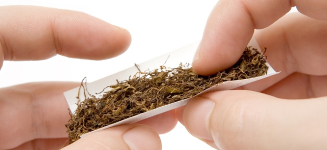

WELCOME TO HOW TO ROLL A CIGARETTE

1. Choose your tobacco
American Spirits
Marlboro
2. Choose Papers
OCB
RAW
Filter Choice
4. Forming Tobacco
Click to show steps
1. Stroke the furry tobacco
5. Rolling the cig
Click to show steps
1. Tuck and Roll
Recomended brands